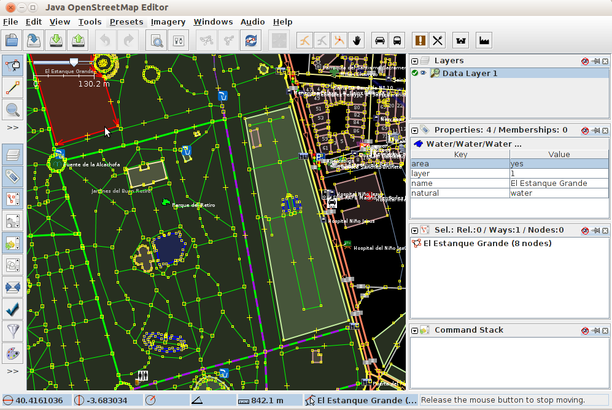

JOSM¶
Editor de escritorio para los datos de OpenStreetMap¶
JOSM is a feature rich, extensible, offline desktop editor for OpenStreetMap (OSM) data, written in Java.
It supports loading stand-alone GPX tracks and GPX track data as well as editing existing nodes (points), ways (lines), metadata tags (name/value information) and relations (ordered sequence of points and lines) from the OSM database. GPX tracks, are usually downloaded in advance from a GPS receiver or from other sources.
A number of specialised plugins have been written for JOSM, which are available for download and install.
{kind=link}
Características Principales¶
- Common GIS Desktop Interface tools:
- Tool bar customization, View control (zoom, pan. etc), styles, icons and layers management.
- Download and upload OSM vector data.
- Open local data:
- Archivos NMEA-0183: .nmea .nme, .nma,. log, .txt
- Archivos OSM: .osm, .xlm, .osmbz2, .osmbz
- Cambio de archivo OSM: .osc,. osc.bz2,. osc.bz,. osc.gz
- imágenes (.jpg)
- Imágenes:
- Visualize basemaps from OSM, Bingsat, Lansat, MapBox satellite, MapQuest Open Aerial or any other WMS sources.
- Herramientas de edición:
- Nodes: merge, join, unglue, distribute, align in circle, align in line, join node to way, and more.
- Ways: split, combine, reverse, simplify, unglue ways, and more.
- Areas: join overlapping areas, create multi-polygon, and more.
- Audio mapping: survey recording management.
- Photo mapping: survey pictures management.
- Plugins: A list of specialized plugins are available for download.
Estándares implementados¶
- JOSM views WMS layers, but uses the OSM API to communicate with OSM database.
Detalles¶
Sitio web: https://josm.openstreetmap.de/
Licencia: GNU General Public License (GPL) versión 2. Nota: plugins JOSM pueden usar otras licencias.
Versión de software: r11427
Plataformas compatibles: GNU/Linux, Mac OSX, MS Windows
Interfaces API: Java